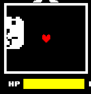

遮罩
简单而言，遮罩是一个用来让玩家聚焦的物体，例如当你和怪物战斗的时候，弹幕会被遮罩框定在战斗框范围内。
或者在制作UI的时候，有多个选项要挤进一个窗口，比较优雅的方法就是使用遮罩框定范围，让所有选项只在这个范围内绘制。
遮罩库位置： Scripts/Libraries/Masks.lua
新建遮罩¶
表面上是新建遮罩，但是实际上不过是临时创了个表而已， 所以无需在意关于回收的问题。
使用 Masks.New(shape, x, y, w, h, r, value) 创建一个新遮罩。
shape可以填写rect/rectangle，会创建矩形遮罩；也可以填写ellipse/circle，创建一个椭圆形遮罩；填写image/img，会创建贴图形状遮罩（详见下方 "贴图遮罩" 一节）。x / y遮罩的位置，通常不需要额外设置因为后续会有方法直接跟随贴图运动。w / h遮罩的宽高，也不需要额外设置。r角度。value此功能可以规定渲染到特定层上，通常设置为1即可。
使用遮罩¶
跟随图片¶
在新建了之后，无需手动设置位置和宽高，直接通过 Follow 函数来跟随一个贴图。
使用 mask:Follow(spr) 来让遮罩跟随一个 spr 。
跟随战斗框
此做法常见于回合中，可直接令遮罩跟随黑色区域。
local mask = Masks.New("rect", 320, 320, 155, 130, 0, 1)
function wave.Update(dt)
mask:Follow(Arena.black)
end
图片使用¶
使用 sprite:SetStencils({mask}) 来设置贴图的遮罩，内部可以放置多个遮罩，例如： sprite:SetStencils({mask1, mask2, mask3}) 。
下面是一个大狗弹幕使用遮罩的案例：

贴图遮罩¶
矩形和椭圆形遮罩虽然能覆盖大多数场景，但总有些形状没办法用一两个 love.graphics 原语画出来——例如心形、星形、甚至是某个怪物剪影。这种情况下可以使用 贴图遮罩 。
原理¶
Masks.Draw 内部调用 love.graphics.setStencilState("increment", "always", 1) 并关闭颜色写入，此时所有"被绘制出来的"图元都会向 stencil 缓冲区 +1 。关键在于：love.graphics.draw 一张图片时，被默认 sprite shader 丢弃掉的透明 fragment 不会参与 stencil action，于是遮罩的形状完全等价于 ImageData 中 "透明度非 0" 的像素区域。
简言之：贴图的 alpha 决定遮罩的形状，完全不透明就是全遮罩，完全透明就是无遮罩，半透明部分按比例写入——这跟人眼看到的结果是一致的。
创建¶
在 Masks.New 的最后追加一个 image 参数即可：
local img = love.graphics.newImage("Sprites/shapes/heart.png")
local mask = Masks.New("image", 320, 320, 0, 0, 0, 1, img)
image可以传入love.Image对象，也可以传入引擎的 sprite 表（Sprites.GetSprite之类的返回值），后者会自动取其.image字段。- 此时的
w / h用于把贴图整体 缩放到目标尺寸（如 64×64）；填0则保留原始尺寸。也就是说贴图遮罩依然支持Follow跟随 sprite 的尺寸变化。 - 若想要更精细的缩放控制，可直接对
mask.scaleX/mask.scaleY赋值，会覆盖w / h的换算。 mask.ox/mask.oy可自定义绘制原点，默认取图片几何中心，使(x, y)对应贴图中心——和矩形/椭圆遮罩的"以(x, y)为几何中心"语义一致。
贴图要求
- 必须带 alpha 通道。推荐使用 PNG。
- 透明度阈值是 完全为 0——介于 0~255 之间的半透明像素会按 GPU 的混合规则写入栅格，不会形成"硬边"。
- 由于引擎默认对贴图使用
nearest过滤、关闭 mipmap，遮罩边缘不会出现意外模糊；想要抗锯齿的话请自行把图片预先做适合的 alpha 修正。
性能
图片遮罩每帧都会重建贴图绘制成本，多张且尺寸大的贴图遮罩可能会拖慢 stencil 写入。可以的话尽量复用同一张 ImageData / love.Image。
使用与跟随¶
贴图遮罩同样是配套 Masks.Draw -> Masks.Use -> 绘制内容 -> Masks.Clear 的标准流程，也可以走 sprite:SetStencils({mask}) 交给贴图管线。
用心形贴图裁切弹幕
local img = love.graphics.newImage("Sprites/shapes/heart.png")
local mask = Masks.New("image", 320, 320, 64, 64, 0, 1, img)
function wave.Update(dt)
mask:Follow(Arena.black)
end
bone_sprite:SetStencils({ mask })
贴图遮罩同样可以和矩形/椭圆遮罩混用，只要它们 value 一致，Masks.Draw 会把它们逐个累加到 stencil 缓冲区里，最终裁剪出来的就是几个形状的并集。